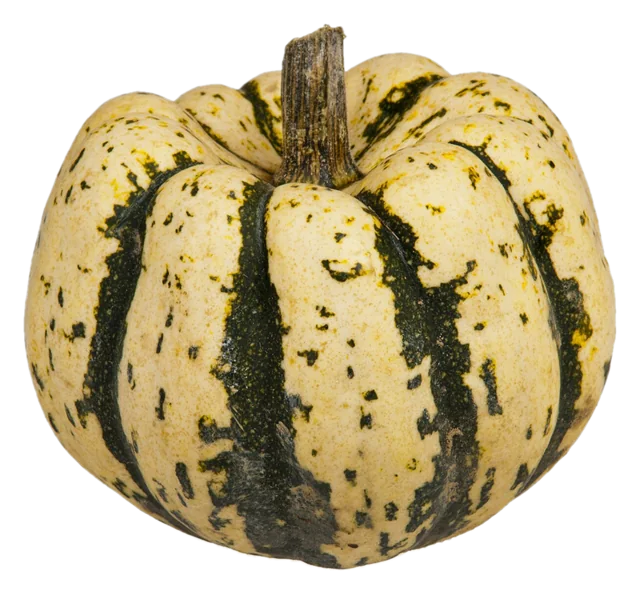
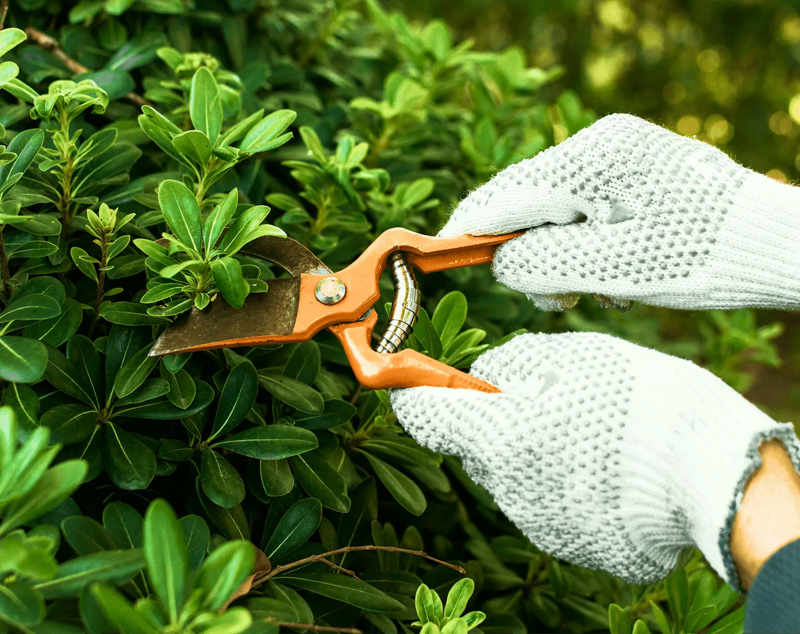
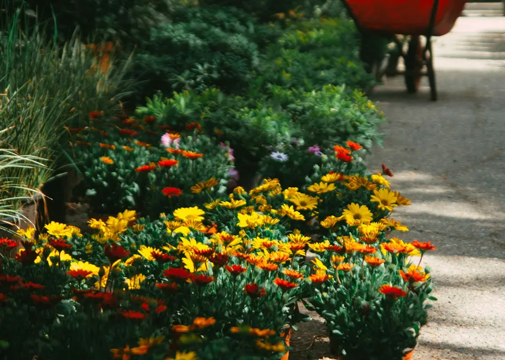
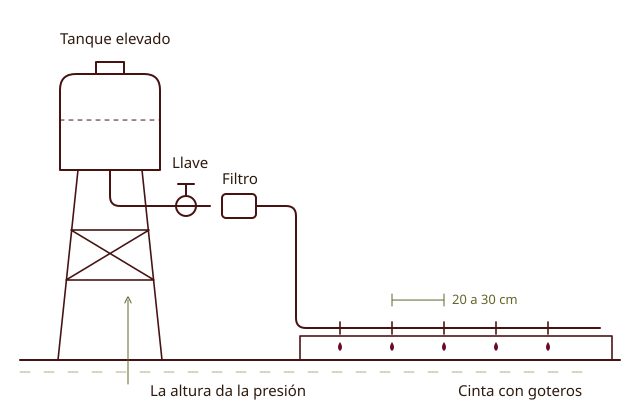
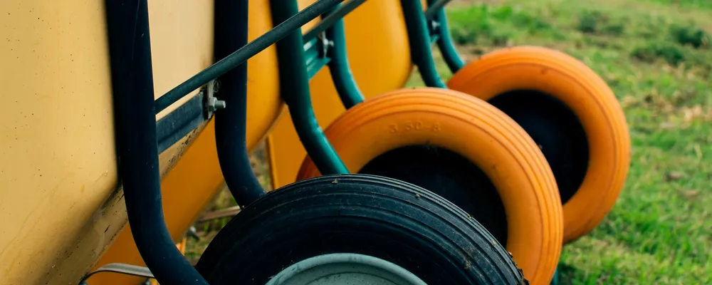
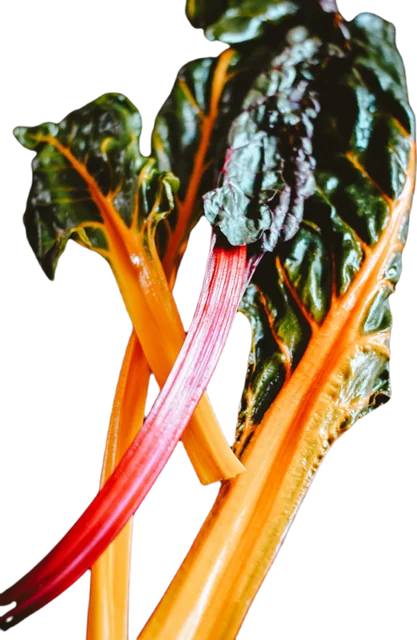
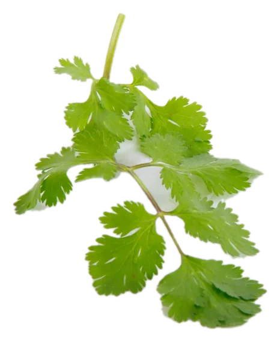
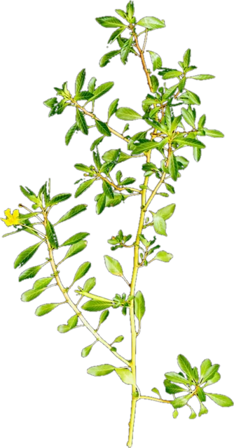

Receta de temporada
Qué cocinar con lo que cosechás
Recetas por temporada y por cultivo, para no desperdiciar nada.

Cuidar y cosechar
Entre la siembra y la cosecha hay un puñado de tareas simples. Hacerlas a tiempo es la diferencia entre una huerta productiva y un yuyal.

Rutina
Ninguna tarea es urgente un día puntual, pero todas se cobran si las dejás pasar dos semanas.
Diez minutos
Un rato fijo, dos veces
Al cambiar de estación
Riego
Regar poco frena las plantas; regar de más pudre raíces, lava nutrientes y favorece los hongos.
Hacé
Evitá
El mulch es la mejor obra de riego que existe. Es gratis, no se rompe y trabaja las veinticuatro horas.

Riego por goteo, lo básico
Plagas
No se trata de matar todo bicho, sino de mantener el equilibrio. Primero se previene; después, se trata con preparados caseros.
| Plaga | Qué vas a ver | Preparado casero |
|---|---|---|
| Pulgones | Hojas enruladas y pegajosas, brotes llenos de bichitos verdes o negros | Macerado de ajo o solución de jabón blanco |
| Ácaros | Puntitos amarillos y una telita fina en el envés | Macerado de ajo |
| Cochinillas | Bultitos blancos o marrones pegados a los tallos | Solución de jabón blanco |
| Babosas y caracoles | Hojas comidas y un rastro brillante | Barrera de ceniza o tierra de diatomea |
Cómo se hacen los preparados
Aliados que hay que cuidar
Vaquita de San Antonio
Crisopa
Avispas chiquitas
Arañas
Sapos y lagartijas
Pájaros
El mejor insecticida es caminar la huerta cada día. La plaga que ves el lunes se saca con la mano.

Cosecha
Cambia el sabor, el rendimiento y lo que dura después.
Conservas y aprovechamiento
Blanqueando antes
Tomate, aromáticas y frutas
Con el excedente
Cuando todo madura junto
Cerrar el ciclo
Solo funciona con variedades de polinización abierta. Algunas especies son mucho más fáciles que otras.
Bienales o de polinización cruzada. Dan semilla al segundo año y se cruzan entre variedades.
Guardá siempre más de lo que creés que necesitás y regalá el resto. La semilla que circula entre huerteros es la que se adapta a tu lugar.
En la cocina
Un recetario simple con lo que se cosecha en cada temporada cierra el círculo.

Receta de temporada
Recetas por temporada y por cultivo, para no desperdiciar nada.



Nada engancha más a alguien con la huerta que comerse su primer tomate.Volver al calendario →
Fuentes · INTA Diseño e instalación de pequeños proyectos de riego por goteo (Zeman, 2017), Botiquín del Huertero (Ledesma, EEA Rafaela), Control ecológico de plagas, Conservación de frutas y hortalizas, Yuyos bien comidos, Producción artesanal de semillas para la huerta.